2 Unsupervised Learning for Asset Allocation
This project explores the use of unsupervised learning techniques for portfolio construction and risk diversification. The analysis combines Principal Component Analysis (PCA), hierarchical clustering, and Hierarchical Risk Parity (HRP) to study how latent market structure and correlation patterns can be used to build more stable asset allocation strategies.
Rather than focusing on return forecasting, the project examines how statistical learning methods can help identify common sources of risk, reduce redundancy across correlated assets, and improve portfolio robustness under realistic market conditions. The underlying idea is that portfolios are often considered diversified based on asset labels, sectors, or asset classes, even when a small number of common risk factors continue to drive most of their behaviour. By studying how assets actually move together, the project aims to construct allocations that better reflect the underlying structure of market risk.
2.1 Problem Definition
Constructing a diversified investment portfolio is one of the central problems in quantitative finance. In practice, investors must allocate capital across a large universe of financial instruments while balancing expected returns, risk exposure, diversification, and portfolio stability. Although the classical mean–variance framework introduced by Harry Markowitz remains foundational in modern portfolio theory, its practical implementation presents important limitations when applied to real financial markets.
Traditional portfolio optimization methods rely heavily on the estimation and inversion of covariance matrices. In large and highly correlated markets, these matrices often become numerically unstable and highly sensitive to small estimation errors. As a result, optimized portfolios may exhibit unintuitive allocations, excessive concentration, poor robustness, and unstable out-of-sample performance. This issue becomes more severe as the number of assets increases and correlation structures evolve through time.
At the same time, financial markets naturally exhibit latent and hierarchical structures that are not fully captured by traditional optimization approaches. Assets rarely behave as isolated entities. Instead, they tend to move collectively according to sector dynamics, macroeconomic conditions, liquidity regimes, or broader market factors. Under stressed market conditions, assets that appear diversified on paper may suddenly behave in remarkably similar ways, reducing diversification precisely when it becomes most important.
The motivation behind this project is to explore whether unsupervised learning techniques can provide a more robust and structurally stable framework for asset allocation. Rather than treating portfolio construction purely as a constrained optimization problem, the project approaches it as a problem of identifying and organizing the underlying geometry of market risk.
To address this, the analysis combines two complementary perspectives. First, Principal Component Analysis (PCA) is used to study the dominant sources of variation in the market and to represent the covariance structure in terms of orthogonal risk components. This provides a compact representation of the market structure while reducing redundancy across highly correlated assets. Second, hierarchical clustering techniques are used to identify groups of statistically similar assets and to construct portfolios using Hierarchical Risk Parity (HRP), a methodology designed to improve allocation stability without requiring direct inversion of the covariance matrix.
The objective is not simply to maximize historical returns, but to investigate whether combining spectral methods and hierarchical structures can produce portfolios that are more diversified, interpretable, and robust under changing market conditions. The project therefore sits at the intersection of quantitative finance, machine learning, and statistical risk modeling, with a strong emphasis on practical portfolio construction rather than purely theoretical optimization.
2.2 Modeling Approach
The modeling approach adopted in this project treats portfolio construction as a problem of understanding the structure of market risk. The analysis focuses on how assets move together, how risk concentrates across the market, and how correlation patterns affect diversification under changing market conditions.
Financial markets are rarely composed of independent assets. Securities that belong to different sectors or asset classes often remain exposed to the same underlying drivers, particularly during periods of stress when correlations tend to increase. This means that portfolios that appear diversified on paper may still contain significant hidden concentrations of risk.
The analysis begins with Principal Component Analysis (PCA), following the general perspective of statistical risk decomposition discussed in [1] and the idea of principal portfolios introduced in [2]. PCA is used to study the covariance structure of the market and identify the dominant directions of variation across asset returns. In practice, a relatively small number of components often explains a large proportion of total market variance, suggesting that many assets continue to react to common underlying factors even when they appear superficially diversified.
The covariance matrix is decomposed according to
\[ \Sigma = Q \Lambda Q^\top \tag{2.1}\]
where \(Q\) contains the eigenvectors and \(\Lambda\) the associated eigenvalues. The eigenvectors define orthogonal directions in the transformed risk space, while the eigenvalues measure the variance explained by each component. This decomposition provides a compact representation of the market structure and helps distinguish between broad market behaviour and more localized sources of variation.
The PCA transformation can also be interpreted as a rotation of the original return space into an orthogonal basis of uncorrelated components,
\[ \tilde{\mathbf{R}} = \Gamma^\top \mathbf{R} \tag{2.2}\]
where \(\mathbf{R}\) denotes the original return vector and \(\tilde{\mathbf{R}}\) its representation in the transformed PCA space. Portfolio returns preserve their underlying structure under this transformation while becoming easier to interpret in terms of independent sources of market variation.
PCA is used as a diagnostic tool for studying market structure before constructing the final allocation. The portfolio construction stage is based on Hierarchical Risk Parity (HRP), introduced in [3] and further developed in [4]. Unlike traditional mean–variance optimization frameworks, HRP does not require direct inversion of the covariance matrix, avoiding part of the numerical instability associated with highly correlated asset universes and estimation error.
The clustering stage identifies groups of statistically similar assets using a correlation-based distance measure,
\[ d_{ij} = \sqrt{\frac{1}{2}(1 - \rho_{ij})} \tag{2.3}\]
where \(\rho_{ij}\) denotes the correlation between assets \(i\) and \(j\). Assets with similar behaviour are grouped together into a hierarchical structure that reflects the organization of the market more naturally than a flat covariance matrix alone.
Portfolio weights are then allocated recursively across the hierarchy, reducing concentration in highly correlated regions of the market. In practice, this tends to produce more stable allocations than traditional mean–variance optimization procedures, where small changes in covariance estimates can generate disproportionately large changes in portfolio weights.
An equally weighted \(1/N\) portfolio is used as a benchmark throughout the analysis. Although simple, this benchmark provides an important reference point when evaluating whether additional model complexity leads to meaningful improvements in diversification and portfolio robustness out-of-sample.
The resulting framework combines spectral analysis, clustering techniques, and hierarchical risk allocation to study diversification from a structural perspective, with emphasis on robustness and stability under changing market conditions.
2.3 Methodology and Implementation
The empirical analysis was conducted using a diversified universe of U.S. equities representing multiple sectors of the economy, including technology, financials, energy, healthcare, consumer staples, communication services, and retail. The selected assets were chosen to provide exposure to different market dynamics while still allowing meaningful correlation structures and latent factor relationships to emerge throughout the analysis.
The asset universe used in the study is summarized in Table 2.1.
| Ticker | Sector |
|---|---|
| AAPL | Technology |
| MSFT | Technology |
| GOOGL | Communication Services |
| AMZN | Consumer Discretionary |
| META | Communication Services |
| JPM | Financials |
| BAC | Financials |
| XOM | Energy |
| CVX | Energy |
| JNJ | Healthcare |
| PFE | Healthcare |
| PG | Consumer Staples |
| KO | Consumer Staples |
| WMT | Retail |
| HD | Consumer Discretionary |
Daily adjusted closing prices were collected and transformed into continuously compounded daily returns. The analysis focused primarily on the covariance and correlation structure of returns rather than on absolute price levels. Figure 2.1 presents the evolution of adjusted prices across the selected assets during the evaluation period.
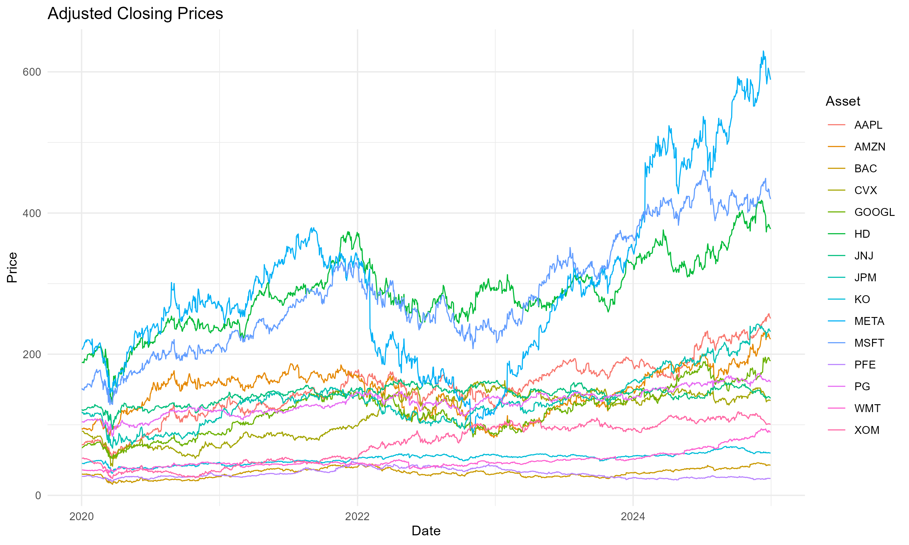
Although the selected securities belong to different sectors, the return series exhibit periods of synchronized behaviour, particularly during episodes of elevated market stress. This becomes more evident when examining the daily return dynamics shown in Figure 2.2.
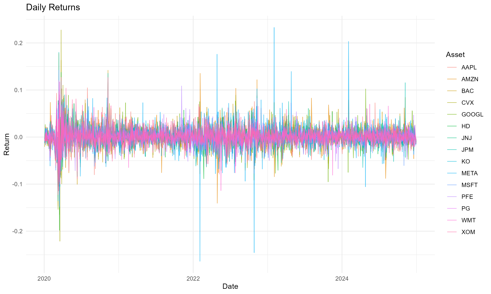
The return series display the volatility clustering commonly observed in financial markets, together with periods of sharply increasing cross-asset dependence. The volatility spikes and correlation increases visible in the data are precisely the conditions under which naïve diversification can become less effective, providing the empirical motivation for the PCA and HRP framework adopted in this study.
The covariance matrix shown in Figure 2.3 was estimated directly from the daily return series and used throughout the PCA and HRP stages of the analysis.
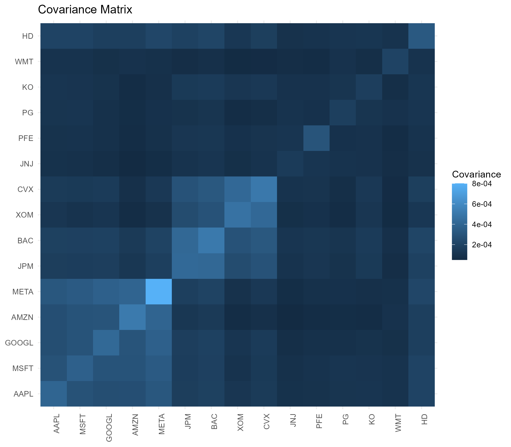
The corresponding correlation matrix is presented in Figure 4.5. Several economically meaningful relationships already become visible at this stage, particularly among technology, financial, energy, healthcare, and consumer staples stocks.
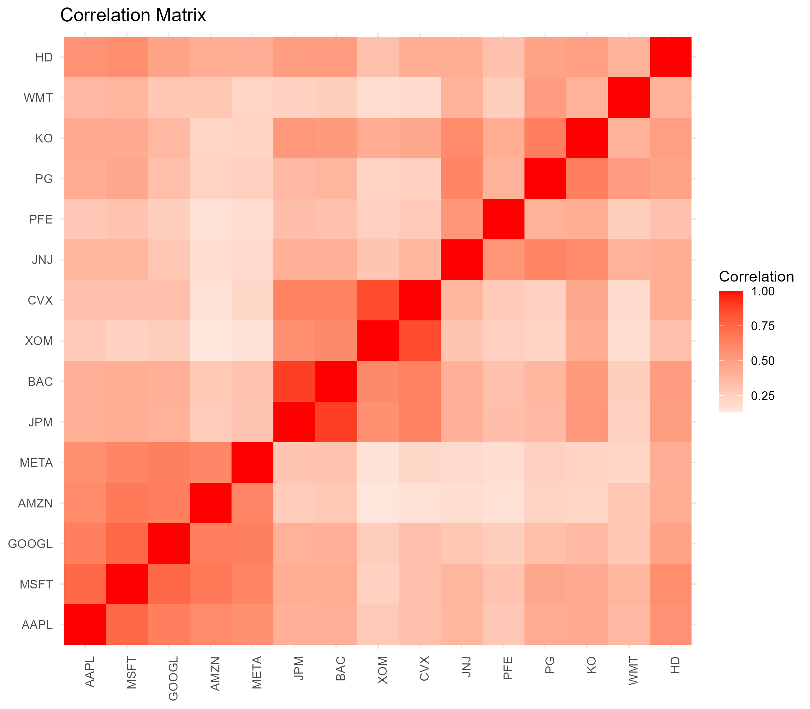
Principal Component Analysis (PCA) was then applied to study the latent structure of market risk. The decomposition was performed on the covariance matrix of returns, allowing the market structure to be represented in terms of orthogonal components ranked by explained variance.
The explained variance associated with each principal component is summarized in Table 2.2.
| Component | Explained Variance | Cumulative Variance |
|---|---|---|
| PC1 | 0.4638 | 0.4638 |
| PC2 | 0.1793 | 0.6431 |
| PC3 | 0.0740 | 0.7170 |
| PC4 | 0.0512 | 0.7682 |
| PC5 | 0.0466 | 0.8148 |
| PC6 | 0.0352 | 0.8500 |
| PC7 | 0.0297 | 0.8798 |
| PC8 | 0.0262 | 0.9060 |
| PC9 | 0.0230 | 0.9289 |
| PC10 | 0.0181 | 0.9470 |
| PC11 | 0.0144 | 0.9614 |
| PC12 | 0.0123 | 0.9737 |
| PC13 | 0.0102 | 0.9839 |
| PC14 | 0.0084 | 0.9923 |
| PC15 | 0.0077 | 1.0000 |
The first principal component explains approximately 46% of total variance, while the first two components together account for roughly 64%. The first five components explain more than 80% of total variance, indicating that a relatively small number of latent factors captures much of the variability in the asset universe. Figure 2.5 and Figure 2.6 illustrate this concentration of variance visually.
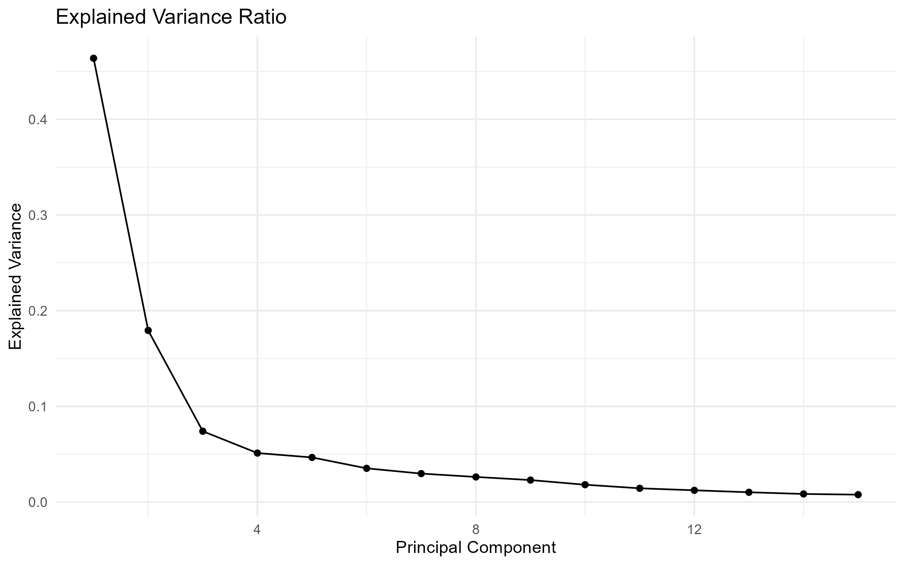
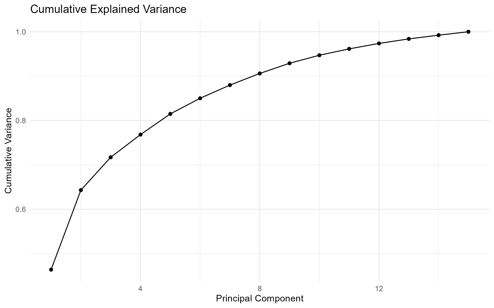
The first principal component captures a broad market-related factor affecting most assets simultaneously, consistent with its dominant contribution to total variance. Subsequent components explain progressively smaller fractions of variance and reveal more localized sectoral structures that are less visible in the original return space.
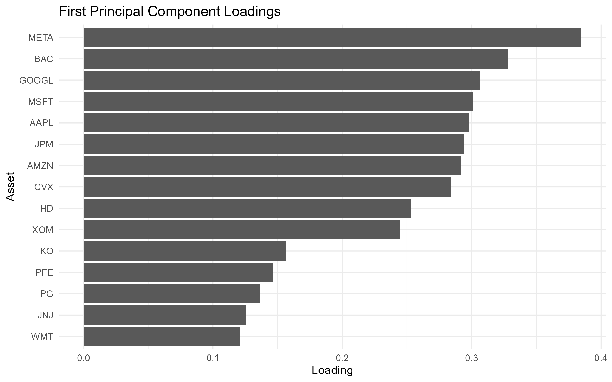
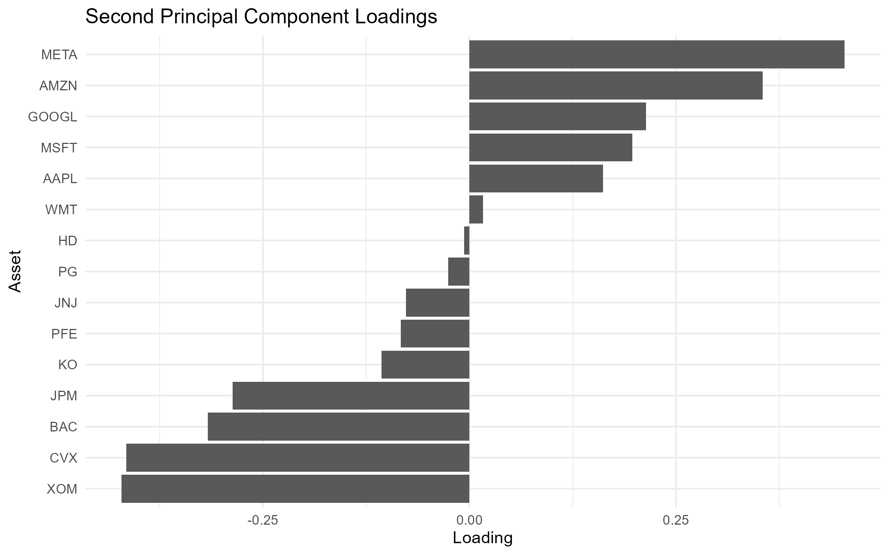
Following the PCA analysis, hierarchical clustering was applied using the correlation-based distance metric described previously. The clustering procedure organizes assets according to statistical similarity, producing a hierarchical representation of the market structure.
The resulting dendrogram is presented in Figure 2.9.
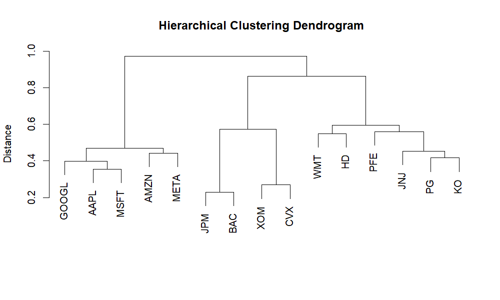
The hierarchical organization becomes even more evident after reordering the correlation matrix according to the clustering structure, as shown in Figure 2.10.
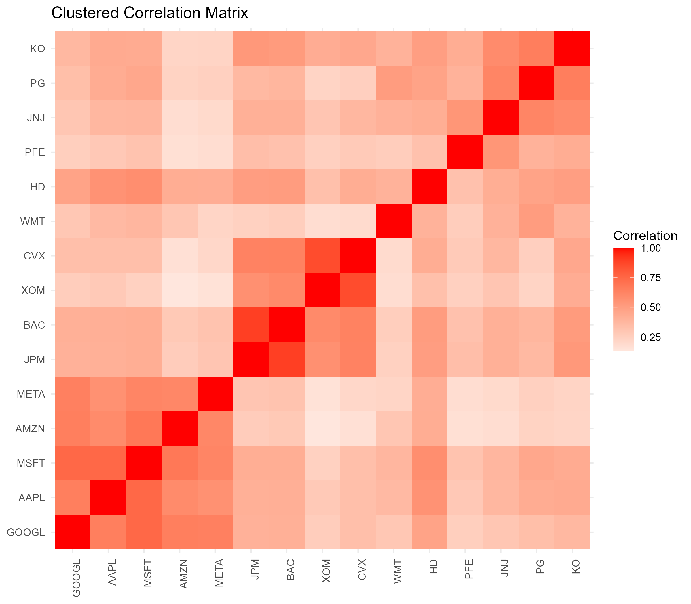
Several economically intuitive clusters emerge naturally from the data. Technology firms tend to cluster together, energy companies form a separate branch, and defensive sectors exhibit their own hierarchical relationships.
Portfolio construction was then performed using the Hierarchical Risk Parity (HRP) allocation framework. For comparison purposes, an equally weighted portfolio was used as a benchmark throughout the analysis.
The equal-weight allocation is shown in Figure 2.11.
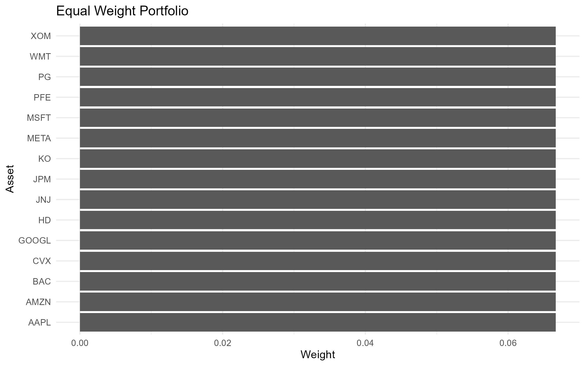
The HRP allocation produced a substantially different weighting structure. The largest portfolio weights were assigned to JNJ, KO, PG, and WMT, while exposure to several technology, financial, and energy assets was reduced relative to the equal-weight benchmark.
| Asset | Weight |
|---|---|
| JNJ | 0.1285 |
| KO | 0.1171 |
| PG | 0.1158 |
| WMT | 0.1127 |
| GOOGL | 0.0705 |
| HD | 0.0689 |
| PFE | 0.0657 |
| JPM | 0.0471 |
| MSFT | 0.0457 |
| AMZN | 0.0439 |
| AAPL | 0.0424 |
| BAC | 0.0390 |
| XOM | 0.0386 |
| CVX | 0.0360 |
| META | 0.0282 |
The resulting allocation is visualized in Figure 2.12.
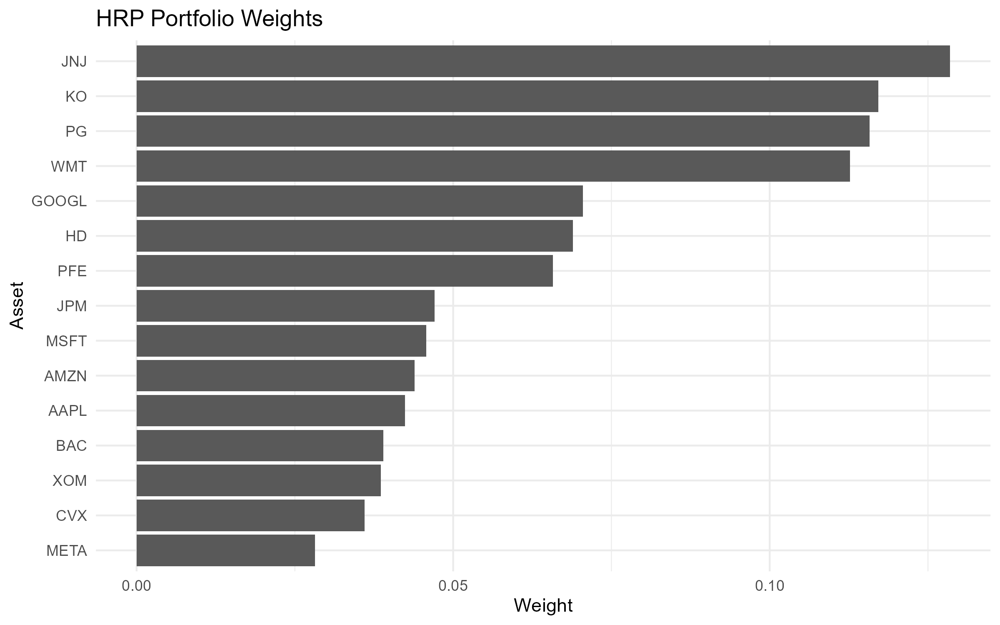
A direct comparison between the equal-weight benchmark and the HRP allocation is shown in Figure 2.13 and Table 2.4.
The differences between the two allocations are visible both at the individual asset level and across sectors. The larger weights assigned to JNJ, KO, PG, and WMT are broadly consistent with the lower volatility and correlation characteristics often associated with defensive sectors.
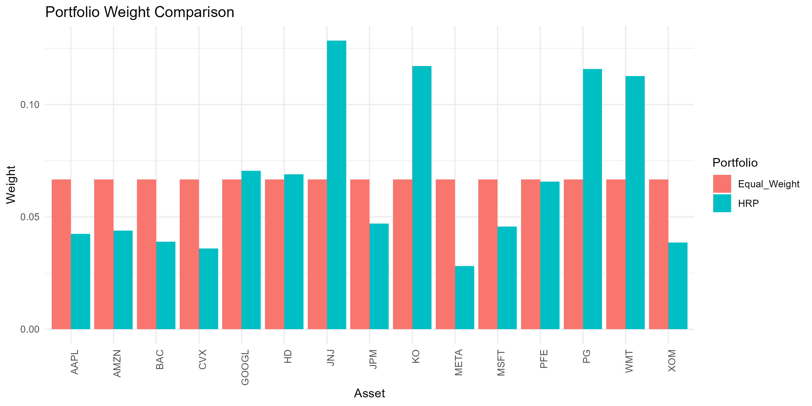
| Asset | Equal Weight | HRP |
|---|---|---|
| AAPL | 0.0667 | 0.0424 |
| MSFT | 0.0667 | 0.0457 |
| GOOGL | 0.0667 | 0.0705 |
| AMZN | 0.0667 | 0.0439 |
| META | 0.0667 | 0.0282 |
| JPM | 0.0667 | 0.0471 |
| BAC | 0.0667 | 0.0390 |
| XOM | 0.0667 | 0.0386 |
| CVX | 0.0667 | 0.0360 |
| JNJ | 0.0667 | 0.1285 |
| PFE | 0.0667 | 0.0657 |
| PG | 0.0667 | 0.1158 |
| KO | 0.0667 | 0.1171 |
| WMT | 0.0667 | 0.1127 |
| HD | 0.0667 | 0.0689 |
Risk contributions were also evaluated in order to study how portfolio risk was distributed across assets under the HRP framework.
| Asset | Risk Contribution |
|---|---|
| KO | 0.001158 |
| JNJ | 0.001111 |
| PG | 0.001090 |
| GOOGL | 0.001007 |
| WMT | 0.000947 |
| HD | 0.000925 |
| JPM | 0.000676 |
| MSFT | 0.000668 |
| PFE | 0.000630 |
| BAC | 0.000620 |
| AAPL | 0.000615 |
| AMZN | 0.000562 |
| CVX | 0.000489 |
| XOM | 0.000450 |
| META | 0.000443 |
The distribution of risk contributions is illustrated in Figure 2.14.
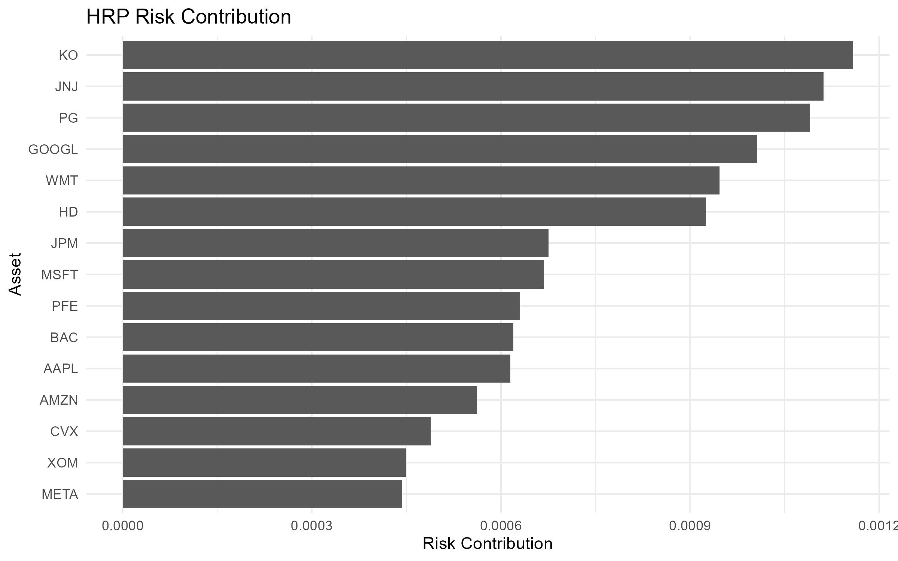
Portfolio performance was evaluated using cumulative returns, rolling annualized volatility, Sharpe ratio, and maximum drawdown. The cumulative return dynamics of both portfolio strategies are shown in Figure 2.15.
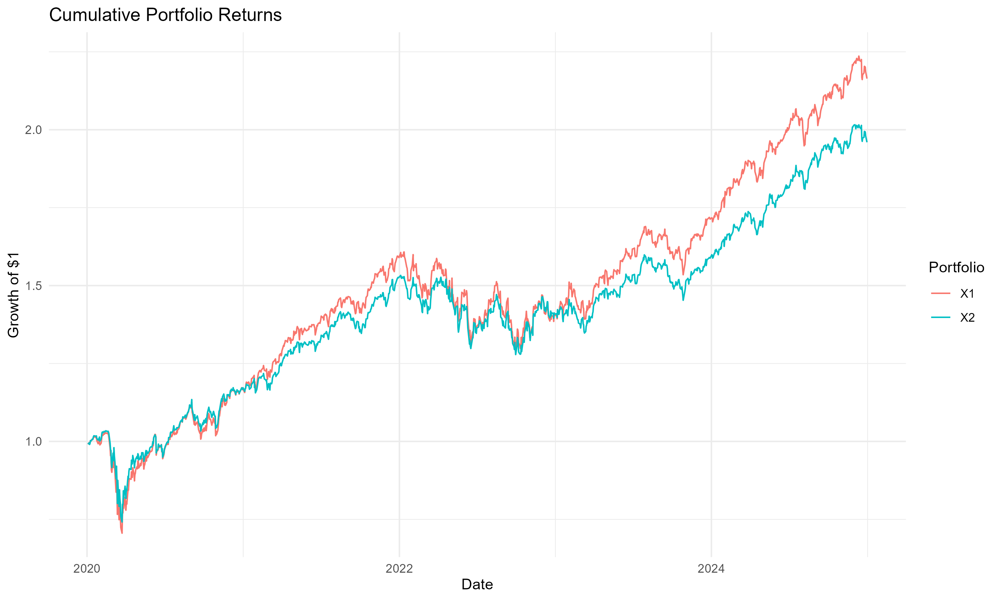
The temporal evolution of portfolio risk is shown in Figure 2.16.
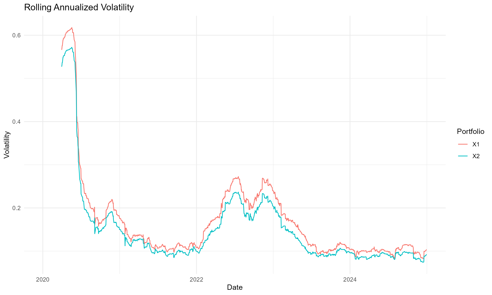
Drawdown dynamics were analyzed separately in order to study the behaviour of both portfolios during periods of market stress.
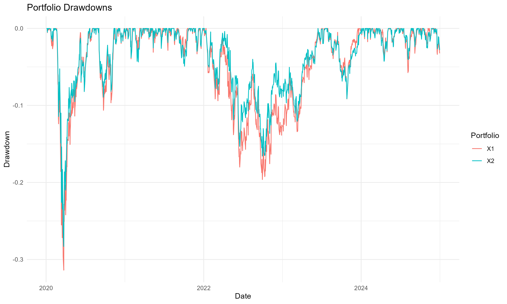
The final performance summary is presented in Table 2.6.
| Portfolio | Annualized Return | Annualized Volatility | Sharpe Ratio | Maximum Drawdown |
|---|---|---|---|---|
| HRP Portfolio | 0.1754 | 0.2021 | 0.8680 | -0.3139 |
| Equal Weight Portfolio | 0.1514 | 0.1808 | 0.8373 | -0.2831 |
The HRP portfolio achieved a modest improvement in annualized return and Sharpe ratio relative to the equal-weight benchmark. However, this improvement was accompanied by a somewhat deeper maximum drawdown during the evaluation period, illustrating that diversification benefits do not necessarily translate into lower losses under all market conditions.
The resulting workflow combines PCA, hierarchical clustering, and risk-based portfolio allocation to study diversification from a structural rather than purely optimization-based perspective. Rather than focusing exclusively on return maximization, the analysis emphasizes robustness, interpretability, and stability under realistic market conditions.
Additional implementation details are available in the companion Quarto notebook here. A companion Python implementation is also available here.
2.4 Results, Discussion, and Limitations
The results of the analysis suggest that the selected asset universe exhibits a considerably more structured organization of risk than might be inferred from asset labels or sector classifications alone. Although the portfolio contains companies operating across multiple industries, both the PCA decomposition and the hierarchical clustering analysis indicate that a relatively small number of latent factors account for a large proportion of observed market variability.
The PCA results provide the clearest evidence of this concentration. The first principal component alone explains approximately 46% of total variance, while the first two components account for roughly 64%. More than 80% of total variance is captured by the first five components. These findings suggest that much of the apparent diversity within the asset universe is driven by a limited set of common risk sources. From a portfolio construction perspective, this highlights an important distinction between holding many assets and achieving genuine diversification. Increasing the number of securities does not necessarily increase the number of independent sources of risk.
The principal component loadings further support this interpretation. The first component exhibits broad exposure across most assets and behaves consistently with a dominant market factor affecting the portfolio universe as a whole. Subsequent components reveal more localized patterns associated with sector-specific behaviour and relative differences between groups of assets. Together, these results illustrate how PCA can provide a compact representation of market structure while helping identify hidden concentrations of risk that may not be immediately visible in the original return space.
A complementary perspective emerges from the hierarchical clustering analysis. The dendrogram and clustered correlation matrix reveal economically intuitive groupings that arise directly from the data. Technology companies tend to cluster together, energy firms form a separate branch, and defensive sectors exhibit their own hierarchical relationships. Rather than imposing predefined classifications, the clustering procedure allows the statistical organization of the market to emerge from observed return behaviour. This provides a useful framework for understanding how diversification is distributed across the portfolio and where concentrations of risk may exist.
The portfolio construction stage extends these observations into an allocation framework. Compared with the equal-weight benchmark, the Hierarchical Risk Parity portfolio produces a noticeably different allocation structure. The largest weights were assigned to JNJ, KO, PG, and WMT, while exposure to several technology, financial, and energy assets was reduced. Importantly, this outcome should not be interpreted as a prediction that these assets will outperform in the future. Rather, it reflects their role within the correlation structure of the portfolio and the objective of distributing risk more evenly across the hierarchy identified during the clustering stage.
This distinction is central to the interpretation of the results. The primary contribution of HRP is not necessarily superior return generation, but a different approach to diversification. Traditional portfolio construction methods often allocate capital directly, whereas HRP attempts to allocate risk. As a consequence, two portfolios with similar levels of capital diversification may exhibit substantially different risk concentrations. The risk contribution analysis suggests that the HRP framework achieves a more balanced distribution of portfolio risk across assets, consistent with its underlying design objectives.
Performance comparisons between the HRP portfolio and the equal-weight benchmark reveal both strengths and trade-offs. The HRP portfolio achieved a modest improvement in annualized return and Sharpe ratio relative to the benchmark. At the same time, it experienced a somewhat deeper maximum drawdown during the evaluation period. These results illustrate an important practical point: improvements in one dimension of portfolio performance do not necessarily translate into improvements across all dimensions. Diversification, risk balancing, and return generation remain competing objectives, and no allocation methodology can fully eliminate these trade-offs.
The results should therefore be interpreted as evidence that unsupervised learning techniques can provide useful insights into market structure and portfolio construction rather than as proof of the superiority of a particular allocation strategy. The analysis demonstrates that PCA and hierarchical clustering are capable of uncovering meaningful relationships within the asset universe and that these relationships can be incorporated into a systematic allocation process. Whether this ultimately leads to superior long-term investment performance remains dependent on market conditions, investment horizons, transaction costs, and implementation choices.
Several limitations should also be acknowledged. First, the analysis was conducted using a relatively small universe of fifteen assets. While sufficient for illustrating the methodology, larger investment universes may exhibit more complex correlation structures and different clustering behaviour. Second, the study relies on a single historical sample period. Financial markets are inherently dynamic, and correlation structures evolve through time, particularly during periods of economic stress. Consequently, both PCA decompositions and clustering results may vary across market regimes.
A further limitation is that the analysis assumes frictionless portfolio implementation. Transaction costs, taxes, liquidity constraints, and rebalancing considerations were not incorporated into the evaluation. In practice, these factors can materially influence realized portfolio performance and may reduce some of the theoretical benefits of more sophisticated allocation methodologies.
Finally, although HRP was designed to improve robustness relative to covariance-sensitive optimization frameworks, it does not eliminate market risk or guarantee protection during severe market downturns. Common risk factors can still dominate portfolio behaviour when correlations rise across the market, reducing the effectiveness of diversification precisely when it is needed most.
Taken together, the results suggest that unsupervised learning techniques provide a valuable lens through which to study diversification and market structure. The main contribution of PCA and HRP in this context is not the pursuit of maximum historical return, but the ability to make sources of risk more explicit and to organize portfolio construction around the underlying structure of the market. From this perspective, the project illustrates how statistical learning methods can complement traditional portfolio theory by offering a more interpretable and structurally informed approach to asset allocation.
2.5 Technical Appendix (Optional)
This appendix provides supplementary mathematical and methodological details related to the unsupervised learning techniques used throughout the project. Additional background on PCA and clustering can be found in [5] and [6].
The objective is not to present a comprehensive treatment of the underlying methods, but rather to summarize the concepts most relevant to the portfolio construction process. The material presented here supports the interpretation of the results and clarifies some of the modeling choices discussed in the main text.
The appendix is organized into two sections. The first summarizes the principal concepts behind Principal Component Analysis (PCA), which was used to study the structure of asset return variability and identify dominant sources of common variation. The second discusses Hierarchical Clustering (HC), which was used to group assets according to their similarity patterns and support diversification decisions.
The main body of the project is intended to remain fully understandable without consulting this appendix. Readers interested primarily in the practical application and results may safely skip the material that follows.
2.5.1 Principal Component Analysis (PCA)
2.5.1.1 Centering of Returns
Let
\[ X = \begin{bmatrix} r_{11} & r_{12} & \cdots & r_{1p} \\ r_{21} & r_{22} & \cdots & r_{2p} \\ \vdots & \vdots & \ddots & \vdots \\ r_{n1} & r_{n2} & \cdots & r_{np} \end{bmatrix} \tag{2.4}\]
denote the matrix of asset returns, where each column corresponds to an asset and each row represents an observation period.
Prior to applying PCA, the return series were centered by subtracting the sample mean of each asset:
\[ x_{ij}^{(c)} = r_{ij} - \bar{r}_j \tag{2.5}\]
where \(\bar{r}_j\) denotes the average return of asset \(j\).
Centering removes differences in mean return levels and ensures that the subsequent analysis focuses exclusively on the covariance structure of the data. The centered return matrix was then used to construct the covariance matrix and perform the eigendecomposition underlying PCA.
2.5.1.2 Covariance Matrix
The covariance matrix summarizes the dependence structure among asset returns and is given by
\[ \Sigma = \frac{1}{n-1} X_c^\top X_c \tag{2.6}\]
where \(X_c\) denotes the centered return matrix and \(n\) is the number of observations.
Each element \(\sigma_{ij}\) measures the extent to which the returns of assets \(i\) and \(j\) vary together. Positive values indicate that returns tend to move in the same direction, whereas negative values indicate opposite movements.
Because PCA is based on the covariance structure of the data, the matrix \(\Sigma\) serves as the primary object of analysis. The principal components are obtained by identifying the directions that explain the largest share of the variability captured by this matrix.
2.5.1.3 Eigenvalue Decomposition
PCA is based on the eigendecomposition of the covariance matrix,
\[ \Sigma = V \Lambda V^\top \tag{2.7}\]
where \(V\) is the matrix of eigenvectors and \(\Lambda\) is a diagonal matrix containing the corresponding eigenvalues.
Each eigenvector defines a principal component, while the associated eigenvalue measures the amount of variance explained by that component.
The principal components are mutually orthogonal and provide a new coordinate system in which the dominant patterns of variation become easier to identify. Components associated with larger eigenvalues explain a greater share of total variance and therefore contain more information about the structure of asset returns.
In this project, the eigendecomposition of the covariance matrix provided the basis for evaluating how much of the variability in the investment universe could be explained by a reduced number of components.
2.5.1.4 Explained Variance
The eigenvalues obtained from the covariance matrix quantify the amount of variance explained by each principal component. Let \(\lambda_i\) denote the eigenvalue associated with the \(i\)-th principal component. The proportion of variance explained by that component is given by
\[ \text{PVE}_i = \frac{\lambda_i}{\sum_{j=1}^{p}\lambda_j} \tag{2.8}\]
where \(p\) denotes the total number of assets.
The cumulative proportion of explained variance can be expressed as
\[ \text{CPVE}_k = \sum_{i=1}^{k} \text{PVE}_i \tag{2.9}\]
representing the fraction of total variance retained when only the first \(k\) principal components are considered.
The explained variance analysis indicated a substantial concentration of variability in a small number of components. The first principal component accounted for approximately 46% of total variance, while the first two components explained roughly 64%. The first five components captured more than 80% of the variability observed across the investment universe.
These results suggest that a relatively small number of latent factors drive a large fraction of asset return behavior. Consequently, the effective dimensionality of the dataset is considerably smaller than the number of assets included in the analysis.
2.5.1.5 Principal Component Loadings
While explained variance quantifies the importance of each principal component, the component loadings describe how individual assets contribute to those components.
Let
\[ v_k = \begin{bmatrix} v_{1k} \\ v_{2k} \\ \vdots \\ v_{pk} \end{bmatrix} \tag{2.10}\]
denote the eigenvector associated with the \(k\)-th principal component. The elements of this vector are commonly referred to as loadings.
Assets with large absolute loadings contribute more strongly to the corresponding component, whereas assets with loadings closer to zero have a smaller influence on that source of variation.
The loadings associated with the first two principal components were examined to identify the assets contributing most strongly to the dominant patterns of return variability. Because principal components are linear combinations of the original assets, the loading structure provides insight into how different securities participate in the latent factors revealed by the PCA decomposition.
Together with the explained variance analysis, the loadings help characterize the underlying structure of the investment universe and identify groups of assets that exhibit similar exposures to common sources of variation.
2.5.1.6 Interpretation for Asset Allocation
The PCA results indicate that a substantial portion of total variance can be explained by a relatively small number of principal components. From a portfolio construction perspective, this suggests that many assets are influenced by common underlying factors rather than behaving independently.
As a consequence, the number of securities held in a portfolio may overstate the true degree of diversification achieved. Assets exposed to the same dominant components can contribute similar sources of risk even when they belong to different sectors or industries.
For this reason, PCA can be viewed as a diagnostic tool for assessing the structure of risk within an investment universe. Rather than focusing on individual assets, the analysis emphasizes the latent factors that drive collective movements in returns.
In this project, PCA was used primarily as an exploratory technique to investigate the dimensionality of the dataset and to identify common sources of variation prior to the clustering analysis described in the following section.
2.5.2 Hierarchical Clustering (HC)
2.5.2.1 Correlation-Based Distance
The clustering analysis was based on the correlation structure of asset returns. Let \(\rho_{ij}\) denote the Pearson correlation coefficient between assets \(i\) and \(j\). The corresponding distance measure is defined as
\[ d_{ij} = \sqrt{\frac{1-\rho_{ij}}{2}} \tag{2.11}\]
This transformation converts correlations into distances while preserving the properties required by a distance metric.
Several useful relationships follow directly from this definition:
- If \(\rho_{ij}=1\), then \(d_{ij}=0\).
- If \(\rho_{ij}=0\), then \(d_{ij}=\sqrt{1/2}\).
- If \(\rho_{ij}=-1\), then \(d_{ij}=1\).
Assets exhibiting similar return dynamics therefore appear close to one another in the resulting distance matrix, whereas assets with dissimilar behavior appear farther apart.
The correlation-based distance matrix served as the primary input to the hierarchical clustering procedure implemented in this project.
2.5.2.2 Agglomerative Clustering
Hierarchical clustering was performed using an agglomerative approach.
The procedure begins by assigning each asset to its own cluster. At each iteration, the two clusters exhibiting the smallest distance are merged into a new cluster. This process continues until all assets have been combined into a single hierarchical structure.
If the investment universe contains \(p\) assets, the algorithm initially creates \(p\) individual clusters. Each merge reduces the number of clusters by one until the hierarchy is complete.
The resulting sequence of merges reveals how assets are related at different levels of similarity. Assets that merge early in the process tend to exhibit highly similar return patterns, whereas assets that merge only at later stages are generally less related.
2.5.2.3 Ward’s Linkage Method
After computing the distance matrix, the clustering algorithm must determine how distances between clusters are evaluated following each merge. This choice is known as the linkage criterion.
In this project, Ward’s linkage method was employed through the Ward.D2 algorithm.
Ward’s method seeks to minimize the increase in within-cluster variance produced by each merge. At every iteration, the algorithm selects the pair of clusters whose combination results in the smallest increase in overall cluster heterogeneity.
This approach tends to generate compact and relatively balanced clusters, making it particularly useful for identifying coherent groups of assets exhibiting similar return behavior.
2.5.2.4 Dendrogram Interpretation
The hierarchical structure produced by the clustering algorithm can be visualized through a dendrogram.
A dendrogram is a tree-like representation that displays the sequence of cluster merges performed during the agglomerative procedure. Each terminal node corresponds to an individual asset, while internal nodes represent cluster combinations formed throughout the algorithm.
The vertical axis represents the distance at which clusters are merged. Assets connected at lower heights tend to exhibit stronger similarity, whereas assets that merge only at higher levels are generally less related.
The dendrogram presented in the main body of the project reveals the hierarchical organization of the investment universe and highlights groups of assets exhibiting similar return behavior.
2.5.2.5 Clustered Correlation Matrix
The ordering produced by hierarchical clustering can be used to reorganize the correlation matrix according to the cluster structure identified in the data.
Rather than displaying assets in an arbitrary order, the reordered matrix places statistically similar assets next to one another. As a result, groups of highly correlated assets appear as visible blocks along the diagonal of the matrix.
This representation provides a convenient way to inspect the dependency structure of the investment universe and to identify groups of assets sharing similar return dynamics.
In this project, the clustered correlation matrix complemented the dendrogram by providing an alternative visualization of the relationships among assets.
2.5.3 Diversification Through Clustering
The clustering results indicate that similarities among assets are not distributed uniformly throughout the investment universe. Instead, groups of assets exhibiting comparable return behavior emerge naturally from the data.
From a portfolio construction perspective, these clusters can reveal hidden concentrations of risk. A portfolio may contain a large number of securities while remaining exposed to a relatively small set of common drivers if many holdings belong to the same cluster.
Hierarchical clustering provides a complementary perspective on diversification by focusing on relationships among assets rather than on individual securities. Assets belonging to different clusters are more likely to contribute distinct sources of risk and therefore may improve portfolio diversification.
Together, PCA and hierarchical clustering provide complementary views of the structure of asset returns. While PCA identifies dominant sources of variation, clustering reveals how assets are organized according to similarity patterns within the investment universe.
2.5.3.1 Methodological Limitations
PCA captures linear relationships among asset returns and may not fully represent nonlinear dependency structures present in financial markets.
Similarly, the clustering structure obtained depends on both the distance metric and the linkage criterion employed. Alternative specifications may produce different cluster configurations and lead to different interpretations of the investment universe.
Despite these limitations, PCA and hierarchical clustering remain useful exploratory tools for understanding the structure of asset returns and supporting diversification analysis.